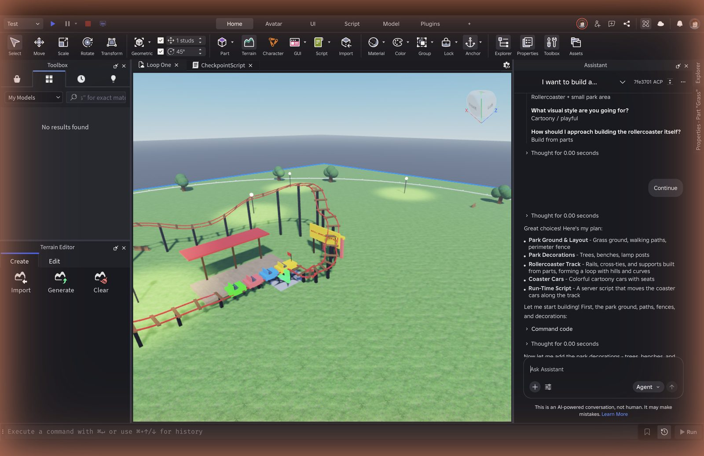
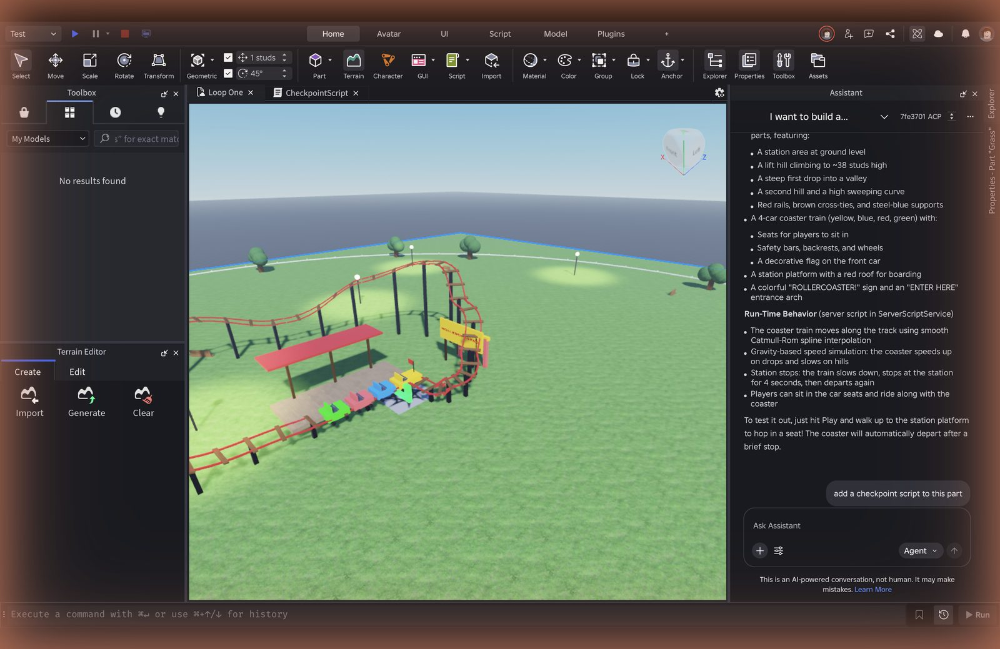
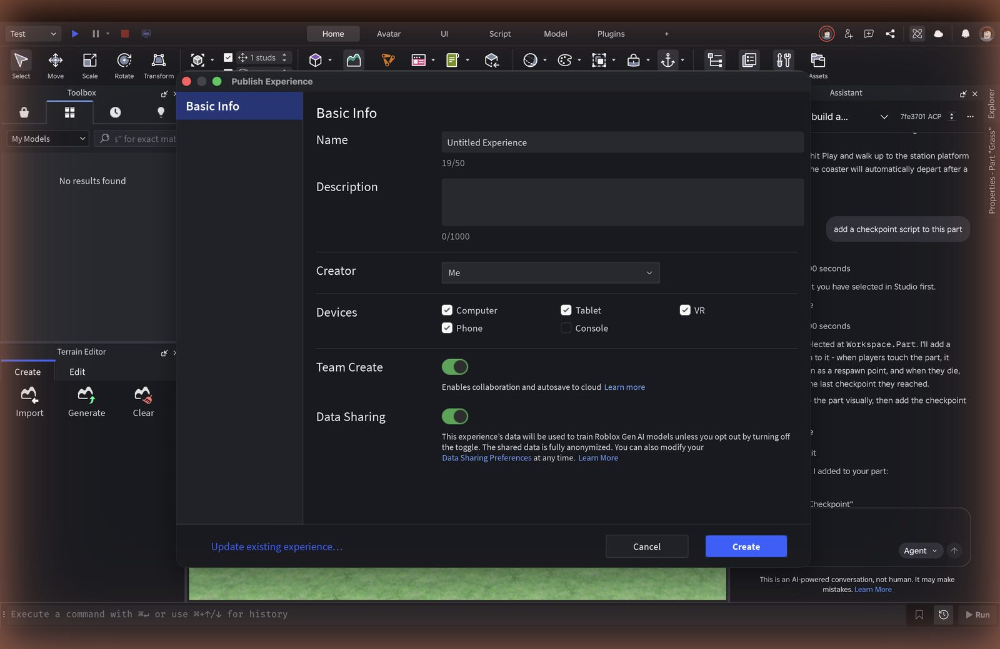
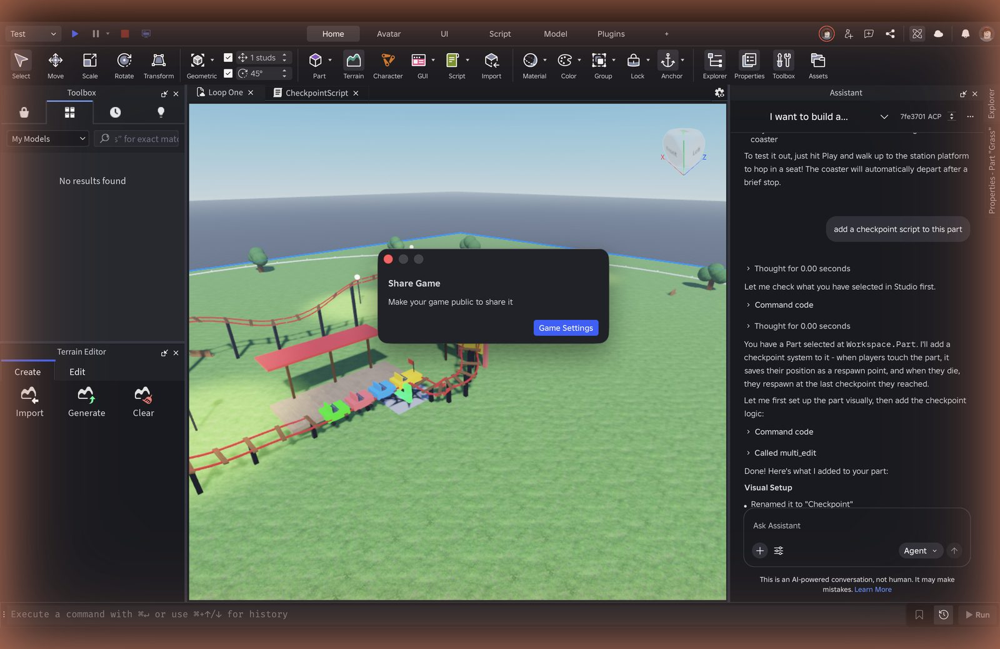
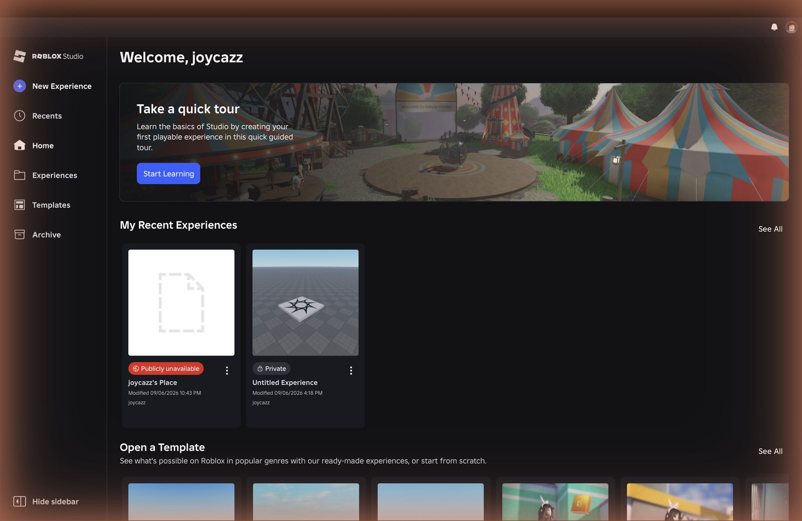
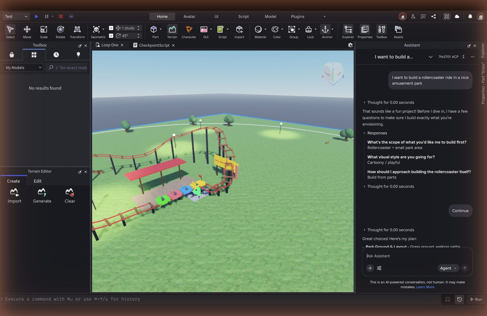
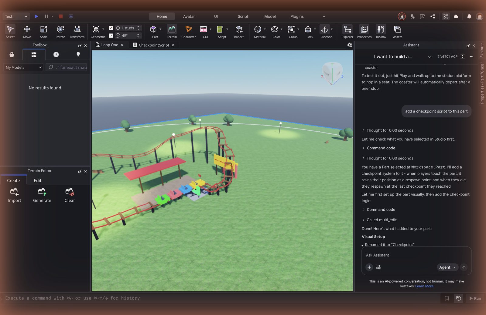
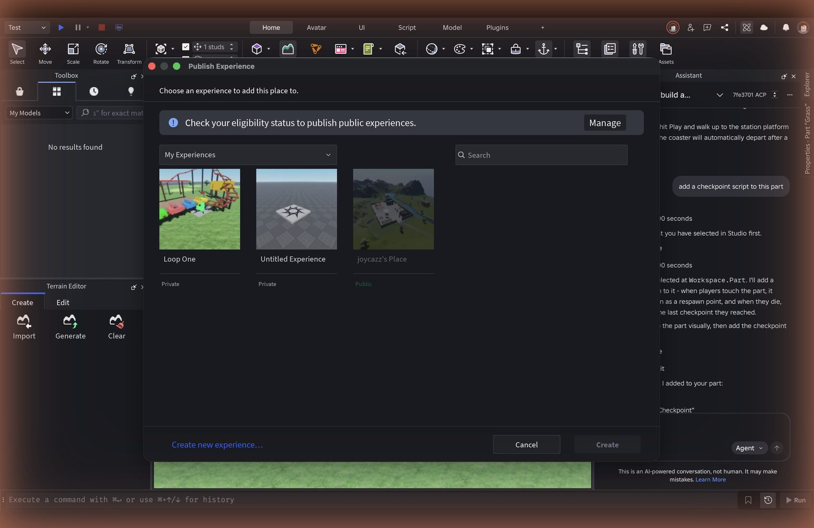
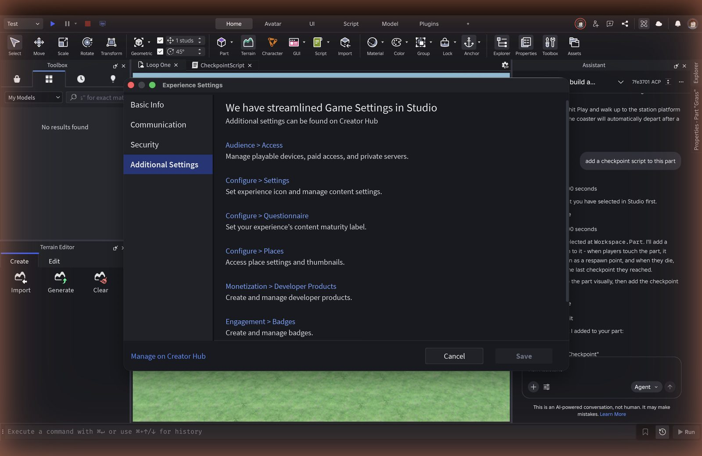

Why I did this
Roblox has made Studio dramatically more capable for people who already know what to ask it. In April 2026 the Assistant gained Planning Mode, mesh and procedural generation, a playtesting agent and MCP support; Roblox reported that 44 percent of the top 1,000 creators use Assistant or MCP tools, and described the audience as ambitious game developers.1 The Spring 2026 Creator Roadmap update covers AI, UI styling, asset tooling, analytics, localization and discovery; I could not find an item aimed at someone opening Studio for the first time.2
That leaves a question worth a PM's time: does the agentic Studio work for a first-timer, and if not, where exactly does it break? I wanted an answer grounded in observation rather than opinion, so I used the method a Google or Stripe PM would use on their own product before proposing anything: a friction log.
Three inputs. A stopwatch-timed friction log of my own first hour, with a row at every pause of roughly ten seconds. A coding pass over 33 DevForum threads from first-time and early creators, tagged by funnel stage and theme. A teardown of how Fortnite Creative and UEFN, Meta Horizon, Minecraft, Scratch and the now-closed Rec Room handle the same first hour.
What this is and is not. The observed data on this page is one logged, screenshotted run plus public community evidence. Three observed sessions with first-time creators are planned and described in section 7; their results are not on this page yet and nothing here is presented as if they had happened. N=1 friction logs are a normal discovery starting point: they generate hypotheses, and the experiment plan is how the hypotheses get tested. Every claim about Roblox here is either observed in the session or cited.
The hour
Setup: MacBook, 13-inch screen, Studio installed shortly before on a new Roblox account. Scenario: a first-time creator opens Studio and tries to make and share a small game, using the Assistant when stuck. The Assistant prompt was fixed in advance and written in plain words, so that every later session can be compared against it: “I want to build a rollercoaster ride in a nice amusement park.”
| # | Elapsed | Step | What happened | Rating |
|---|---|---|---|---|
| 1 | 0:40 | Open Studio, new experience | Home page with a “Take a quick tour” card. New Experience opened a Baseplate straight away, with Toolbox and Terrain Editor docked left and the Assistant panel already open on the right. | Smooth |
| 2 | 1:30 | Work out what to do first | Ribbon: Home, Avatar, UI, Script, Model, Plugins. Nothing in the viewport suggested a first action. The open Assistant box was the only thing that read like an invitation to do something. | Friction |
| 3 | 4:30 | Place, move, resize a part | Part appeared on the SpawnLocation. Dragging a Scale handle deselected the part instead of scaling it. Typing a size in Properties did not take. Gave up after two tries and kept the default part. | Friction |
| 4 | 5:30 | Ask the Assistant, in plain words | “That sounds like a fun project,” then a three-step interview in a card: scope (just the coaster, coaster and small park, full park), visual style (cartoony, realistic, low-poly), build method (build from parts, AI-generated mesh, Creator Store asset). The card was clipped until I collapsed Explorer. | Friction |
| 5 | 6:30 | Answer and continue | Chose coaster and small park, cartoony, build from parts. A Review card listed my three answers with Edit and Continue. Clear. | Smooth |
| 6 | 9:30 | Wait for the build | “Planning next moves,” then “Generation is taking longer than expected, please wait.” Viewport unchanged for about four minutes. Then a yellow warning: “The current response exceeded the maximum output length,” with a Continue link. Still nothing built. | Blocker |
| 7 | 15:40 | Continue | Grass, a path, trees and lamp posts appeared at about 11:30; the coaster at about 13:00. Then a prompt: “This prompt will make changes to your scripts,” with Review, Accept for this prompt, Accept for this session. Accepted. Summary ended with “To test it out, just hit Play.” | Friction |
| 8 | 17:30 | Press Play | Spawned inside the train, because the train had been placed on the SpawnLocation. The train ran the track on its own; one car ended up off the rails by the station. | Friction |
| 9 | 20:00 | “Add a checkpoint script to this part” | Script-change gate again. Assistant renamed the part Checkpoint, resized it, added a script and explained it plainly. It worked. Nothing changed where my camera was pointing, so the only evidence was the chat. | Friction |
| 10 | 22:00 | Ask for a kill brick | Third script-change accept in a row. A KillBrick part with a debounced script appeared out of view. | Friction |
| 11 | 22:15 | Read a script | CheckpointScript opened as a tab. About 60 lines, heavily commented, readable. | Smooth |
| 12 | 31:00 | File, Publish to Roblox | File menu lists Save to File, Save to Roblox, Publish to Roblox and their variants in one list, seven items. Publish dialog: name, description, creator, devices, Team Create on, Data Sharing on by default (experience data used to train Roblox generative AI unless you opt out). No audience or visibility field. Title bar changed to Loop One at 31:00. | Friction |
| 13 | 32:00 | Share | Share button: “Make your game public to share it,” with a Game Settings button. Game Settings opened Experience Settings, whose Additional Settings tab says the rest lives on Creator Hub and links to Audience and Access. The audience setting, the age check and the two-day account rule all live outside Studio. | Blocker |
| 14 | 33:00 | Friend plays on a phone | Not reached. Audience change, age check and the friend test left for another day. | Blocker |
Unplanned rows: the Explorer, Properties and Assistant panels share one column on a 13-inch screen, so the Assistant's question cards were clipped until I collapsed the other two (5:45). Studio wrote an auto-recovery file mid-session (20:30), harmless. The complete log with every row is embedded at the bottom of this page.




More from the run





Three findings from the log
The first build looked like a failure for four minutes, then said it had failed. “Generation is taking longer than expected” sat on screen with an empty viewport, then “The current response exceeded the maximum output length.” Continue rescued it, but a first-timer has no reason to know what output length means or that Continue is safe to press. The result, when it came, was excellent. The problem was the four minutes before it.
Published does not mean shareable, and Studio hands you to a website to find out why. The Publish dialog has no audience field. Share says “Make your game public,” Game Settings says the setting has moved to Creator Hub, and Creator Hub is where the age check and the two-day account rule live. A creator who has just spent half an hour building leaves Studio to learn that nobody can play yet.
Every script action stops for an Accept, and none of them changed anything I could see. Three accept prompts in a row. The checkpoint and kill brick both worked, but from where the camera sat, a working script and a broken one look identical until you press Play. By the third prompt I understood why a first-timer would press Accept All for the session without reading.
What worked, and should be protected: the three-question interview plus the Review card is clear and quick. The finished park was far beyond what I could have built by hand. Play from Studio is instant. The checkpoint script was readable and commented. The Home page does have a first-timer path, the quick tour, but it lives on the Home page and not inside the create flow.
Do other new creators hit the same walls?
I coded 33 DevForum threads from first-time and early creators, 2023 to August 2026, by funnel stage and theme. DevForum skews toward people who already cleared install and earned posting rights, so true first-hour dropouts are under-represented; Reddit was not accessible from my research setup. With that caveat, the themes line up with the log.
Primary theme per thread; some threads carry a second tag. Themes with two or fewer threads (toolbox trust, mobile creation, docs) omitted.
“Have you clicked Publish to Roblox in Studio? That might be why it is saying unavailable.”Reply to a creator whose friends saw “creator hasn't made this game available,” DevForum, August 20263
“Currently it's pretty bad and is unable to generate even simple features.”Reply on the Planning Mode announcement thread, DevForum, April 20264
“Roblox won't give you players. You have to find them yourself.”Reply on a zero-visits thread, DevForum, July 20265
One hypothesis did not survive. I expected blank-canvas paralysis to be the main story. It shows up in only two threads, and in my own run it cost about a minute because the Assistant panel was already open. The expensive breaks come later: while the first generation runs, and after publish.
What Roblox has already built, and how others handle the same hour
Roblox has invested at both ends of this problem. For beginners: the quick tour on the Studio Home page, Creator Hub tutorials and curricula, and starter templates that are complete games a newcomer can open and press Play on within minutes. For capable creators: Cube, its 3D foundation model (March 2025), 4D generation (February 2026) and the agentic Studio release (April 2026) with Planning Mode and a playtesting agent.1 Since December 2025, publishing to the public has required ID verification or a real-money purchase, and since May 2026 reaching under-16s has required an age check, ID, 2FA, Roblox Plus or a one-time fee, and an engagement evaluation.6 Those are safety decisions and this proposal does not touch them. It is about when a new creator learns they exist.
The gap is between the two ends. The beginner path lives on the Home page and in documentation; the Assistant is built for people who already know what to ask it and can read what it did.
| Dimension (1 to 5) | Roblox Studio | Fortnite Creative + UEFN | Meta Horizon | Scratch (reference) |
|---|---|---|---|---|
| Time to first playable thing | 4 | 3 | 3 | 5 |
| Guided first path inside the editor | 4 | 4 | 3 | 5 |
| No-code to code ramp | 2 | 4 | 3 | 5 |
| In-tool help and AI | 5 | 3 | 4 | 4 |
| Publish, share, first ten players | 2 | 4 | 4 | 4 |
Scores from my teardown of official docs and announcements, September 6, 2026. Rec Room scored 5 on in-game creation and is excluded because it closed on June 1, 2026. Minecraft omitted (no first-party editor for add-ons).
Two borrowable mechanics. Fortnite's Discover row gives newly published islands deliberate trial impressions before they have an audience, so the cold start is passable without off-platform marketing.7 Scratch puts the tutorial beside the canvas rather than on a separate page. Roblox is the strongest of the group on in-tool AI and the weakest on the last mile, which is exactly where my hour ended.
PRD: a first hour that ends with a link a friend can open
Problem
A first-time creator can prompt the Assistant, get a genuinely good result, press Play and publish in about half an hour. Along the way the first generation looks broken for four minutes and then reports an error, the build-method question may quietly decide whether the thing they asked for is rideable, script prompts interrupt without visible payoff, and at the end the published link opens for nobody, with the reason on a different website.
Who
Someone opening Studio for the first time who wants to make one small thing and show one friend. Not a returning developer. Not a studio.
Goal
A first-time creator reaches a link one friend can open on a phone in their first session, and learns anything that would stop them from sharing before they spend the hour building.
Proposal A: Publish ends with a shareable link (primary)
- The Publish dialog gains an audience step: only you, friends, everyone. It states plainly who can open the link the moment Create is pressed.
- If the account cannot yet reach friends, the dialog says why (age check, account age) with the date it unlocks, and offers to start the age check from Studio.
- Share never says “make your game public” without a control to do it. It shows the current audience and the next step.
- New creators default to the friends audience once eligible.
- Save to Roblox and Publish to Roblox are visually separated in the File menu, with one line each on what they do.
Proposal B: generation you can watch (secondary)
- Long generations show a stage list in the Assistant panel (ground, decorations, track, cars, script) with the current stage marked, and place each stage in the viewport as it completes rather than at the end.
- When a response hits the output-length limit, the Assistant continues automatically and says so in plain words: “That was a big build. Continuing.” No yellow warning, no unexplained Continue link.
- The first prompt on a new account is framed as a rough first pass with an explicit “this may take a few minutes” before it starts.
- The build-method question shows a thumbnail and one plain sentence per option (“a coaster you can ride, built from parts”; “a sculpted coaster that looks great but does not move”), and if the prompt contains a verb like ride, the Assistant says which options deliver it.
Proposal C: visible confirmation for script changes (secondary)
- When a script lands on a part, the camera frames the part, the part highlights briefly, and a one-line prompt appears: “Press Play and touch it to try.”
- The script-change consent prompt is asked once per session on a new account, with a plain-language explanation, instead of on every action.
Out of scope
Changing the age, ID or account-age requirements. Those are safety policy. This surfaces them earlier; it does not weaken them. Also out of scope: the Data Sharing default in the Publish dialog, which deserves its own review.
Success metrics
- Primary
- Share of new-account creators with at least one non-creator play within 7 days of first Studio open.
- Secondary
- Time from first open to first non-creator play. Share of first generations abandoned before completion. Share of Assistant script insertions followed by a Play within 60 seconds. Save vs Publish misclicks in session one.
- Guardrails
- No change in age-check completion quality. No rise in reports on friends-audience experiences. Assistant cost per new account within budget. No increase in low-effort copies of existing titles.
Risks
Surfacing gates earlier could reduce publishes; the experiment's kill criterion covers this. Auto-continue could hide real failures; it is capped at one continuation before asking. RDC 2026 runs September 10 to 12 and may announce changes here, in which case this becomes an evaluation of what shipped rather than a pitch for it.
Mockups
Low-fidelity, drawn to show behaviour rather than visual design. Left: the Publish dialog with the audience step. Right: the Assistant panel during a long first generation.
Loop One
Who can open your link right now
Building your park
Big builds take a few minutes. You'll see each piece appear as it finishes.
That was a big build, so I'm continuing where I left off. Nothing is lost.
The left card also changes what happens after the hour: the creator leaves knowing the exact day a friend can open the link, instead of discovering it by sending a link that fails.
Three more first hours, planned
One run tells you where to look. The next step is to sit beside three first-time creators, one at a time, on their own laptops: same rollercoaster prompt, same step list, same goal of a friend playing on a phone. I do not help or prompt, I log a row at every pause of roughly ten seconds, and I ask three questions at the end, recorded in their words: the most confusing moment, whether they trusted the Assistant, and whether they would open Studio again tomorrow.
- Participant A
- Business student, plays Roblox on her phone a few times a month, has never opened Studio, no coding.
- Participant B
- Computer science student, writes Python daily, has never played Roblox.
- Participant C
- Weekly Roblox player on phone with spend history, never opened Studio, no coding.
What I expect, written down before the sessions so I can be wrong in public: A and C read the four-minute stall as a failure and either wait it out on their phones or stop. B reads the output-length warning as a token limit and clicks Continue without worry. On the build-method question, A and C choose by a word they recognise and may not get a rideable coaster. A and C conclude the checkpoint script did nothing. Nobody reaches a friend on a phone inside the hour on a brand-new account. C, an existing player, signs into Studio with a different account than her phone and inherits none of her player status.
Results replace this section when the sessions are done. If they contradict the expectations above, that is the more interesting page.
Experiment plan
Quantitative
- Population
- Accounts under 7 days old opening Studio for the first time.
- Arms
- Control. Publish audience step only (A). Generation progress and auto-continue only (B). A and B together. Proposal C rides along with B.
- Primary metric
- Share with at least one non-creator play by day 7.
- Power
- Sized once the baseline is known. If the baseline is under 5 percent, expect tens of thousands of first opens per arm, which Studio's volume supports.
- Kill criterion
- Any arm that lowers the publish rate by more than 10 percent relative without raising the first-player rate is stopped.
- Read-out
- Day 7 primary. Day 28 for return-to-Studio, to check that a faster first share does not trade against coming back.
Qualitative
Five observed sessions per arm using the friction-log method in section 7, same prompt, same step list, so the sessions on this page become the baseline the arms are compared against.
The friction log
The complete log as I kept it during the run: details block, method, every timed row with its rating and screenshot reference, and the summary. Tabs for the observed sessions follow the same layout. Open the sheet in a new tab.
Method after the Google and Stripe friction-log convention: one row per pause of roughly ten seconds, rated Smooth, Friction or Blocker, with a screenshot reference where one was taken.